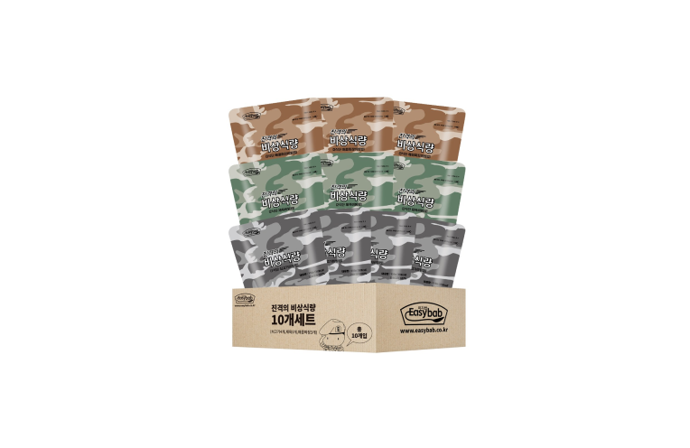
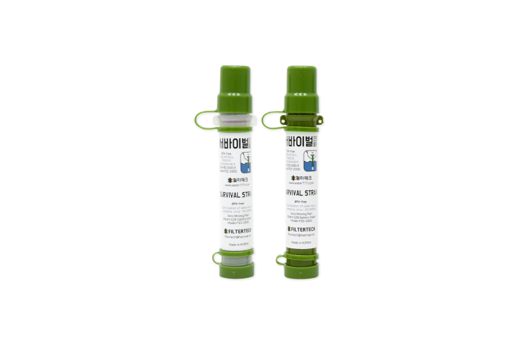
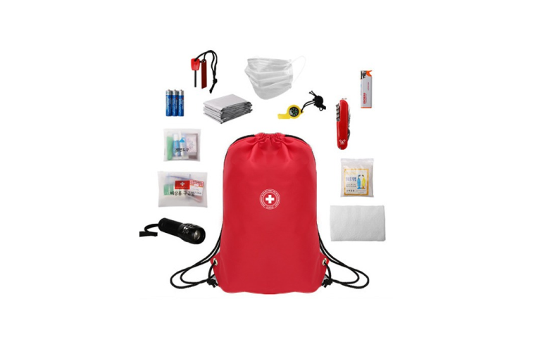

Menu
Close
2MORROW 백곰탕
HOME
기후재난시나리오
곤충재난
식량난
홍수
폭염
생존가방
소중한기억들
Social Links:
Facebook
Twitter
Youtube
홍수 시나리오
물에 뜨는
방수 가방
홍수 시나리오
물에 뜨는
방수 가방
곤충 시나리오
모기 진드기
물러 나라
곤충 시나리오
모기 진드기
물러 나라

식량난 시나리오
재난에도
밥은 먹고다녀야지
식량난 시나리오
재난에도
밥은 먹고다녀야지
폭염 시나리오
펄펄 끓는 지구로
어지러울때 필수
폭염 시나리오
펄펄 끓는 지구로
어지러울때 필수

재난 시나리오
모든 재난에 필요한
필수 아이템
재난 시나리오
모든 재난에 필요한
필수 아이템
재난 시나리오
소중한 반려동물도
지켜주세요
재난 시나리오
소중한 반려동물도
지켜주세요

재난 시나리오
귀찮으면
한꺼번에
재난 시나리오
귀찮으면
한꺼번에
기본 생존가방 준비
살기 위해
이렇게 준비하자
생존가방 준비
살기 위헤
이렇게 준비하자